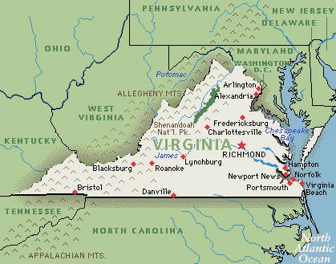

Զարմանալի փաստեր ԱՄՆ-ի մասին, որոնք նույնիսկ տեղաբնակները չգիտեն
Յուրաքանչյուր 8 ամերիկացուց 1-ն անպայման աշխատել է McDonalds առագ սննդի սպասարկման կենտրոններում:
Յուրաքանչյուր 8 ամերիկացուց 1-ն անպայման աշխատել է McDonalds առագ սննդի սպասարկման կենտրոններում:
Հանրահայտ Apple ընկերությունում ընդհանուր առմամբ՝ ավելի շատ գումար կա, քան ԱՄՆ գանձապետարանում:
Չնայած այն հանգամանքին, որ ամերիկացիների մեծ մասն անգլերեն է խոսում, ԱՄՆ-ում դեռևս պաշտոնական պետական լեզու գոյություն չունի:
Յուրաքանչյուր 3-րդ ամերիկացին տառապում է ճարպակալմամբ:
Դեռահասների շրջանում ծխելն ԱՄՆ օրենսդրությամբ պատժելի արարք չի համարվում, սակայն նրանց ծխախոտ վաճառողին պատիժ հասնում է:
Վիրջինիա նահանգում ավելի շատ նախագահներ են ծնվել, քան ցանկացած պետությունում:
1507 թվականին գերմանացի քարտեզագիր Մարտին Վալդզեյմյուլլերը կազմեց մի քարտեզ, որտեղ արմտյան կիսագնդի հողերն անվանեց «Ամերիկա»՝ ի պատիվ ճանապարհորդ և քարտեզագիր Ամերիգո Վեսպուչիի (լատ.՝ Americus Vespucius)[16]։ «Ամերիկայի Միացյալ Նահանգներ» (անգլերեն՝ United States of America) բառակապակցությունը թվագրվում է 1776 թվականի հունվարի 2-ին, հեղինակը՝ Սթիվեն Մոյլանն էր, որը Ջորջ Վաշինգտոնի ռազմական օգնականն էր և մայրցամաքային զորքերի մուսթեր֊մաստեր գեներալը։ Դիմելով Ջոզեֆ Ռիդին՝ Մոյլանը ցանկանում էր ուղեկցել «Ամերիկայի Միացյալ նահանգների մեծածավալ և հզոր ուժերին» դեպի Իսպանիա՝ հեղափոխական պատերազմին աջակցելու համար[17][18][19]։ «Ամերիկայի Միացյալ Նահանգներ» արտահայտության առաջին հայտնի տպագրությունը The Virginia Gazette պարբերականի անանուն հոդվածն է (Ուիլիամբուրգ, Վիրջինիա, ապրիլի 6, 1766)[20]։ Ջոն Դիքենսոնի պատրաստած Համադաշնության հոդվածների երկրորդ սևագիր տարբերակը, որը ավարտվեց 1776 թվականի հունիսի 17-ին, ճանաչում էր, որ «Համադաշնության անվանումը պետք է լինի «Ամերիկայի Միացյալ Նահանգներ»[21]։ Հոդվածների վերջնական տարբերակը, որը 1777-ի վերջին ուղարկվել էր նահանգներ ստորագրման, պարունակում էր «Այս համադաշնության անվանումը պետք է լինի «Ամերիկայի Միացյալ Նահանգներ»» ("The Stile of this Confederacy shall be 'The United States of America'")[22]: 1776 թվականի հունիսին Թոմաս Ջեֆերսոնը Անկախության հռչակագրի իր սևագրի վերնագրում մեծատառերով գրել էր «ԱՄԵՐԻԿԱՅԻ ՄԻԱՑՅԱԼ ՆԱՀԱՆԳՆԵՐ»[21]։ Այս նախնական տարբերակը տարածվեց միայն 1776 թվականի հունիսի 21֊ին, և պարզ չէ՝ այն գրվել է Դիքինսոնից առաջ, թե հետո[21]։ «Միացյալ Նահանգներ» ավելի կարճ արտահայտությունը նույնպես տարածված էր։ Այլ տարբերակներ են ԱՄՆ֊ն, Ամերիկան, անգլերենում նաև՝ Մ․Ն․֊ն (U.S., Միացյալ Նահագներ)։ Նահանգներ (անգլերեն՝ States) ասելով նույնպես նկատի են ունենում ԱՄՆ֊ն։ Կոլումբիա բառը, որը տարածված էր 18-րդ դարի պոեզիայում և երգերում, ծագել է Քրիստոֆեր Կոլումբոսի անունից։ Այն առկա է Կոլումբիա շրջան տեղանվան մեջ[23]։ «Միացյալ Նահանգներ» արտահայտությունը 1865 թվականին վավերացված «Միացյալ Նահանգների Սահմանադրության տասներեքերորդ լրացման» մեջ ի սկզբանի հոգնակի էր, քանի որ նկարագրում էր անկախ նահանգների միությունը[24]։ Եզակի ձևը տարածվեց Ամերիկայի քաղաքացիական պատերազմից հետո։ Եզակի ձևը ներկայումս ստանդարտ ձևն է։ Տարբերությունն ավելի ակնառու է, քան կիրառումը՝ կախված նրանից, թե Միացյալ Նահանգներ ասելով նկատի է առնվում նահանգների միությունը, թե նահանգների ընդհանրությունը[25]։ Միացյալ Նահանգների քաղաքացին ամերիկացին է։ Ամերիկացի տերմինը հազվադեպ է առնչվում այնպիսի թեմաների, որոնք կապված չեն Միացյալ Նահանգների հետ[26